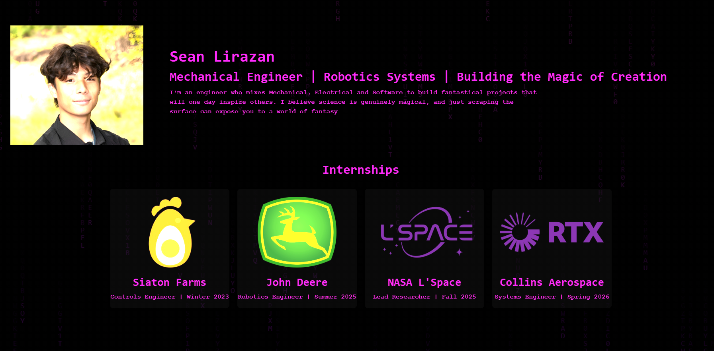

pid

A collection of things I've built, experimented with, and learned from.
I don't build everything because it's practical. Sometimes I build something because I think it's cool.

A browser fish swarm where simple local rules add up to a school that feels alive—and reacts to your mouse.


My home base—built from zero web experience and shaped by feedback from ~10 test users. Make it exist first, then make it good.
These projects are different, but they've started teaching me the same thing: I don't want to just learn technologies. I want to make things.
Spark → Build → Test → Break → Learn → Improve → Share
Sometimes the result is useful. Sometimes it's a game. Sometimes it's a fish simulator. Sometimes it's something I probably should not have spent three weeks building. That's part of the fun.
I'm interested in the space where engineering, software, creativity, and curiosity overlap — and I'm still figuring out exactly what lives there.